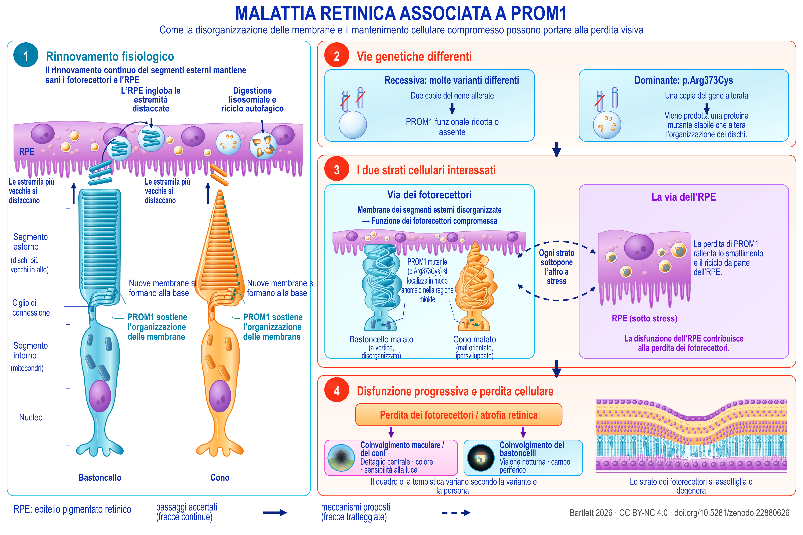

Review
Degenerazione retinica associata a PROM1
Una mappa delle evidenze attenta agli alleli: meccanismi, interventi e priorità di ricerca
English title: PROM1-associated retinal degeneration
Working paper, version 1.90, 21 September 2026.
The Zenodo record also holds an accessible HTML edition, a spoken-text version, a description of the figure and an audiobook.
Abstract
La degenerazione retinica associata a PROM1 comprende forme dominanti di malattia maculare e forme recessive di degenerazione dei fotorecettori, spesso più estese. Modi di trasmissione e presentazioni cliniche distinti pongono domande meccanicistiche e terapeutiche differenti. Questa revisione e mappa delle evidenze integra genetica clinica, storia naturale, biologia delle membrane, modelli di fotorecettori e di epitelio pigmentato retinico (RPE), interventi preclinici e registrazioni datate di studi nell’uomo. Il progresso traslazionale più solido è il recupero ottenuto in sistemi sperimentali deficienti di PROM1, dimostrato in organoidi derivati da pazienti e in topi knockout. Un beneficio dopo l’esordio è riportato in uno studio murino consultato in testo integrale e in un distinto abstract congressuale. La principale trasferibilità ancora irrisolta riguarda la malattia da mutazione dominante, nella quale aggiunta genica, soppressione del mutante e trattamento combinato richiedono un confronto diretto. La letteratura meccanicistica va oltre la morfogenesi dei segmenti esterni: esperimenti diretti sull’RPE implicano il flusso autofagico e lo smaltimento dei segmenti esterni, mentre modelli knockout sensibili alla luce implicano endotelina, fattore di crescita insulino-simile 1 (IGF1) e stress metabolico. Queste vie richiedono un’interpretazione specifica per compartimento. I risultati dell’autofluorescenza quantitativa umana limitano una spiegazione universale basata sull’eccesso di bisretinoidi, e gli effetti protettivi locali dell’endotelina in altri genotipi retinici sconsigliano di considerare questa via uniformemente dannosa. Gli endpoint clinici sono conseguentemente stratificati: l’espansione dell’atrofia nelle forme dominanti, la contrazione della zona ellissoide nelle forme recessive e l’assottigliamento specifico per strato alla tomografia a coerenza ottica (OCT) misurano processi diversi e presentano differenti effetti pavimento. Gli studi nell’uomo con criteri di eleggibilità genetica espliciti o più ampi possono ammettere la malattia da PROM1; per la maggior parte di essi, tuttavia, le registrazioni mostrano chi avrebbe potuto partecipare, non chi abbia effettivamente partecipato né con quali esiti. Sette programmi sperimentali collegano queste distinzioni a confronti verificabili, ciascuno presentato attraverso il contrasto decisivo, l’accorgimento necessario e la decisione che permetterebbe di risolvere. Il quadro risultante distingue le terapie candidate in base ad allele, compartimento e stadio della malattia.


Description of the figure
Malattia retinica correlata a PROM1. Un modello di lavoro della condizione secondo le conoscenze attuali: il rinnovamento dei segmenti esterni e ciò che lo altera (1, 2), i due compartimenti cellulari coinvolti (3) e la perdita visiva conseguente (4). Le linee tratteggiate indicano ciò che è proposto anziché accertato. Le evidenze relative a ogni elemento si trovano nelle sezioni da 3 a 10.
Pannello 1, rinnovamento normale. Un fotorecettore a bastoncello e uno a cono sono affiancati sotto l’epitelio pigmentato retinico. Ciascuno è etichettato dall’alto verso il basso: segmento esterno, con i dischi più vecchi in alto; ciglio connettente; segmento interno, contenente i mitocondri; e nucleo. Nuova membrana si forma alla base di ciascun segmento esterno e PROM1 ne sostiene l’organizzazione, mentre le estremità più vecchie vengono distaccate verso l’alto. L’epitelio pigmentato retinico ingloba queste estremità e le degrada mediante digestione lisosomiale e riciclo autofagico.
Pannello 2, le due vie genetiche. A sinistra, malattia recessiva: molte varianti differenti, due copie geniche alterate, con riduzione o assenza di PROM1 funzionale. A destra, malattia dominante, p.Arg373Cys: una copia genica alterata, dalla quale viene prodotta una proteina mutante stabile che disorganizza i dischi.
Pannello 3, i due strati cellulari colpiti. A sinistra, la via dei fotorecettori: membrane disorganizzate dei segmenti esterni compromettono la funzione fotorecettoriale. Un bastoncello malato è raffigurato con un aspetto vorticoso e disorganizzato, un cono malato con orientamento anomalo e crescita eccessiva, e PROM1 mutante, p.Arg373Cys, localizzata impropriamente nella regione mioide. A destra, la via dell’epitelio pigmentato retinico: la perdita di PROM1 rallenta le funzioni di smaltimento e riciclo di questo strato, mostrato in condizioni di stress, e la sua disfunzione contribuisce alla perdita dei fotorecettori. Frecce curve tratteggiate collegano i due riquadri, con la dicitura «ogni strato sottopone l’altro a stress»; il tratteggio indica un’ipotesi proposta anziché un passaggio accertato.
Pannello 4, disfunzione progressiva e perdita cellulare. Seguono perdita dei fotorecettori e atrofia retinica, con due diramazioni: coinvolgimento maculare e dei coni, che compromette il dettaglio centrale, i colori e la sensibilità alla luce; e coinvolgimento dei bastoncelli, che compromette la visione notturna e il campo periferico. Il quadro e la tempistica variano secondo la variante e la persona. Una sezione trasversale adiacente mostra lo strato dei fotorecettori che si assottiglia e degenera.
Legenda. Le frecce continue indicano i passaggi accertati. Linee e frecce tratteggiate indicano ciò che è proposto.
Download the figure (PNG, 5400 × 3600 pixels, CC BY-NC 4.0)
How to cite
Bartlett C. Degenerazione retinica associata a PROM1: Una mappa delle evidenze attenta agli alleli: meccanismi, interventi e priorità di ricerca. Version 1.90. Zenodo, 21 September 2026. https://doi.org/10.5281/zenodo.22880626